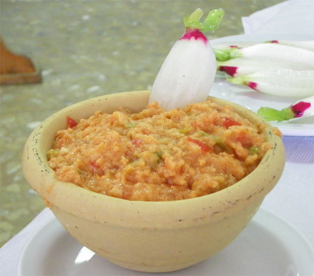

Ajo Campero

Ingredients
- 1 kg stale crusty bread
- 1 kg tomatoes
- 1/2 head of garlic
- 2 bell peppers
- extra virgin olive oil
- salt
- 2 soft boiled eggs
- 1-2 pickled bell peppers, sliced
Steps
- Tear the bread into coarse pieces and set aside
- Char the bell peppers and slice into pieces; set aside
- Boil the eggs and set aside
- Blanch tomatoes 30-60 sec until cracks form, peel once cool enough, and set aside both tomatoes and cooking liquid, keeping the liquid warm
- In a large pot or basin, crush garlic and salt until a coarse paste forms
- Repeat with bell peppers and peeled tomatoes (one at a time)
- As the mixture becomes liquidy, add pieces of bread to absorb liquid
- Add the rest of the bread and continue mixing
- Add a generous glug of olive oil
- Add tomato cooking liquid as required to moisten the mixture, mix, and cover
- Let rest for 5-10 minutes, uncover, and mix
- Serve immediately topped with quartered eggs and pickled pepper